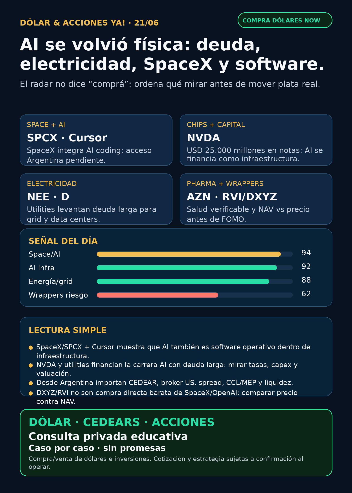

AI se volvió física: SpaceX/Cursor, deuda, energía y wrappers privados.
Reporte educativo para Argentina: fuentes verificadas, capa dólar/CEDEARs y cero recomendación personalizada.

Dólar & Acciones YA — Radar completo — 21/06
Lectura simple del día
La lectura de hoy es directa: la carrera AI se volvió física y financiera. No alcanza con mirar modelos o aplicaciones: aparecen deuda larga, electricidad, data centers, chips, satélites, software de agentes y vehículos privados con premium. La señal central de la noche fue SpaceX/SPCX comprando Anysphere/Cursor vía filing SEC y cobertura AP; al mismo tiempo, NVIDIA financia escala con USD 25.000 millones de notas, y utilities como NextEra/Dominion siguen levantando capital para infraestructura de muy largo plazo.
Para Argentina, esto no se traduce en “comprá tal ticker”. La lectura correcta es separar cuatro cosas: buena empresa, precio razonable, instrumento disponible y tamaño prudente en cartera. Si el activo está afuera, hay que revisar acceso US directo, CEDEAR si existe, liquidez, spread, comisiones, CCL/MEP, impuestos y riesgo de concentración.
Dólar Argentina — snapshot operativo
- BlueLytics: oficial compra $1.432,00 / venta $1.482,00; blue compra $1.448,00 / venta $1.480,00; timestamp 2026-06-19T19:45:51.499965-03:00.
- CriptoYa: no disponible en esta corrida (<HTTPError 403: 'Forbidden'>).
- Uso práctico: referencias públicas para contexto. Para operar se confirma broker/mesa en vivo, spread, comisiones, liquidez y CCL/MEP del momento.
Tesis central
AI está entrando en una etapa de infraestructura compuesta:
1. Capital: las empresas líderes y utilities necesitan financiar capex enorme con deuda/capital largo.
2. Chips y data centers: GPUs, memoria, networking, foundry y cloud siguen como cuello de botella físico.
3. Energía y red: data centers no existen sin generación, transmisión, permisos, cooling y costo de capital.
4. Software de agentes: Cursor/Anysphere dentro de SpaceX muestra que el software AI puede ser parte del moat operativo, no solo una app separada.
5. Instrumento correcto: desde Argentina importa tanto la tesis como cómo se accede: acción US, CEDEAR, ETF, fondo cerrado, wrapper privado o simplemente “no accionable todavía”.
Radar educativo por calidad de señal — no es ranking de compra
1) SpaceX / SPCX + Anysphere/Cursor — space se mezcla con AI coding
- Qué pasó: SpaceX/SPCX informó en 8-K del 16/06/2026 un acuerdo de fusión para adquirir Anysphere, Inc. (“Cursor”). Cursor pasaría a ser subsidiaria 100% de SpaceX, sujeto a condiciones y aprobaciones. AP también cubrió el deal como adquisición de USD 60.000 millones.
- Por qué importa: SpaceX deja de ser solo cohetes/Starlink y empieza a integrar software de AI coding como parte de su capacidad operativa. Esto une space, satélites, compute y agentes.
- Estado: señal fortalecida / radar alto.
- Argentina: no asumir comprabilidad local. Falta verificar acceso real en broker argentino, especie, liquidez, spread, precio vivo, riesgo fiscal y si aparece o no CEDEAR.
- Fuentes: SEC 8-K https://www.sec.gov/Archives/edgar/data/1181412/000162828026043411/spaceexplorationtechnologi.htm ; AP https://apnews.com/article/spacex-cursor-acquisition-vibe-coding-a5c60fcbaaca262cf107d30f1de899ef
2) NVIDIA / NVDA — liderazgo AI financiado con deuda larga
- Qué pasó: NVIDIA completó el 18/06/2026 una oferta de notas por total aproximado de USD 25.000 millones, con vencimientos entre 2028 y 2056.
- Lectura en criollo: incluso el líder de AI necesita financiar la escala como si fuera infraestructura crítica. Eso fortalece la tesis AI infra, pero también obliga a mirar costo de capital, duración y expectativas ya descontadas.
- Estado: señal fortalecida / en radar.
- Riesgo: valuación exigente, China, competencia, concentración de capex y dependencia de que la demanda AI siga justificando inversiones gigantes.
- Fuente: https://www.sec.gov/Archives/edgar/data/1045810/000119312526275783/d48176d8k.htm
3) Energía / grid — NextEra y Dominion muestran el peaje eléctrico de AI
- Qué pasó: NEE Capital registró USD 3.750 millones de junior subordinated debentures y Dominion informó USD 1.500 millones de junior subordinated notes due 2056. El patrón común es financiamiento de largo plazo.
- Por qué importa: data centers, AI y electrificación necesitan generación, transmisión, red y almacenamiento. Las utilities pueden beneficiarse del crecimiento de demanda, pero son negocios regulados y sensibles a tasas.
- Estado: fortalece tesis sectorial energía/grid.
- Riesgo: tasas, reguladores, ejecución de capex, permisos, deuda y valuación.
- Fuentes: NEE https://www.sec.gov/Archives/edgar/data/753308/000119312526273933/d138800d424b2.htm ; Dominion https://www.sec.gov/Archives/edgar/data/715957/000119312526272001/d122810d8k.htm
4) Robinhood / HOOD — fintech con crecimiento y ajuste de costos
- Qué pasó: Robinhood informó reducción laboral aproximada de 10%, mientras reportó volúmenes promedio diarios récord month-to-date en equities, options y prediction markets.
- Lectura: crecimiento de uso + disciplina de costos puede ser positivo, pero un recorte grande también trae riesgo operativo/cultural. Para Stock Radar importa por trading platforms, prediction markets y futuros AI trading agents.
- Estado: vigilar / señal mixta.
- Fuente: https://www.sec.gov/Archives/edgar/data/1783879/000178387926000071/hood-20260616.htm
5) AstraZeneca / AZN — pharma verificable fuera del hype GLP-1
- Qué pasó: AstraZeneca reportó vía 6-K aprobación de Truqap en EE.UU. para prostate cancer.
- Por qué importa: salud no es solo GLP-1. Oncology con aprobación regulatoria es una señal más verificable que titulares virales sin fuente primaria.
- Estado: fortalece tesis pharma/oncology.
- Riesgo: adopción clínica, pricing, competencia, cobertura, pipeline y expiraciones.
- Fuente: https://www.sec.gov/Archives/edgar/data/901832/000165495426005964/a1987i.htm
6) YPF / energía argentina — disciplina de capital local
- Qué pasó: YPF informó adquisición de 461.311 acciones Clase D propias en ByMA entre 08/06 y 12/06; otro 6-K informó recompra de Class XXX Notes por Ps. 21.436 millones.
- Lectura para Argentina: energía local sigue en radar porque Vaca Muerta, gas, tarifas, transporte y generación conectan con la tesis global de energía para crecimiento. Pero no alcanza con “me gusta YPF”: hay que mirar precio, liquidez, riesgo regulatorio, CCL, horizonte y tamaño.
- Estado: vigilar / fortalece capa Argentina.
- Fuentes: https://www.sec.gov/Archives/edgar/data/904851/000155485526001343/MainDocument.htm ; https://www.sec.gov/Archives/edgar/data/904851/000155485526001344/MainDocument.htm
Watchlist base — seguimiento rápido
- RKLB: revisado; sin fuente primaria nueva fuerte en esta corrida. Sigue en radar space/launch/defensa, pero no fue titular de hoy.
- NVDA: señal fuerte por notas de USD 25.000 millones. Mirar capex, deuda, China y valuación.
- PLTR: revisado; sin filing/noticia primaria fuerte detectada 24–72h. Narrativa AI vigente, valuación a vigilar.
- TSM: revisado; sin primaria nueva más fuerte que NVDA/SPCX en esta ventana.
- MU: earnings a vigilar por HBM/memory, pero previews de prensa no son claim fundamental.
- GOOGL/GOOG: TPUs/cloud/data centers siguen en radar; titular sobre playbook NVIDIA quedó secundario/paywall, no se eleva como hecho.
- AAPL: revisado sin señal nueva fuerte.
- HOOD: señal mixta verificada por 8-K: recorte + volúmenes récord.
- TSLA: revisado; rumores de merger con SpaceX quedan hype/no verificado. Autonomy/robotaxi sigue en seguimiento.
- ASML: revisado sin señal primaria nueva fuerte.
- AVGO: tender offers de deuda; vigilar balance, no venderlo como nuevo contrato AI.
- Gold/GLD/GOLD/B: no hablar de oro sin instrumento exacto; `GLD`, `GOLD` y `B` no son intercambiables.
- RVI/DXYZ: wrappers private-tech útiles para educación, no acceso limpio ni barato a OpenAI/SpaceX.
- SNDK/CBRS: revisados sin señal primaria nueva fuerte.
Capa Argentina / instrumentos
- CEDEAR no es acción US: puede tener ratio, liquidez, spread y CCL implícito distintos. Una tesis buena afuera puede ser mala entrada local si el instrumento está caro o ilíquido.
- MEP/CCL importan: pueden mover el resultado en pesos aunque el subyacente en dólares no se mueva igual.
- SPCX/DXYZ/RVI: no asumir acceso limpio desde Argentina. Hay que verificar broker, especie, spread, liquidez, premium/descuento y tratamiento fiscal.
- Energía local: YPF, Pampa, TGS y Central Puerto quedan en radar educativo por gas, electricidad, transporte y generación; cada una requiere precio/fuente fresca antes de pasar a análisis humano.
Energía
- USA: NEE/D fortalecen el carril utility/grid por financiamiento largo. Nuclear/uranio/cooling revisados; sin fuente primaria nueva más fuerte en esta corrida.
- Argentina: YPF aportó señal verificable de recompra de acciones/notes. El proyecto TGS/YPF/Pluspetrol NGL apareció como discovery, pero falta fuente primaria antes de publicarlo como hecho fuerte.
- Lectura simple: AI puede hacer plata también en los “peajes” de la infraestructura: energía, red, gas, transmisión y refrigeración.
Pharma/salud
- AZN: señal limpia por Truqap/oncology.
- PFE: CFO Dave Denton sale efectivo 15/08/2026; la compañía dijo que no es por desacuerdo. Estado: vigilar, no titular.
- LLY/NVO: GLP-1 sigue en radar, pero el claim de “FDA aprobó pastilla de Lilly/orforglipron/Foundayo” quedó NO VERIFICADO sin FDA/Lilly primario. No usarlo como hecho.
Defensa, aerospace y guerra física
Carril revisado explícitamente: AVAV, GE Aerospace/GE, RTX, LMT, NOC, GD, HWM, KTOS, BA, ITA/XAR. Aparecieron señales secundarias sobre AVAV y GE, pero sin fuente primaria suficiente en esta corrida. Estado: revisado con señales en auditoría; no se eleva como titular. Mantener radar por drones, counter-UAS, motores militares/comerciales, aftermarket, municiones y defensa aérea.
Autonomous mobility / physical AI
Revisado: Tesla, Waymo/Alphabet, Uber, Zoox/Amazon y Joby. No apareció señal primaria nueva más fuerte que SPCX/NVDA/energía. Estado: seguimiento.
Crypto gobernado
Sin input crypto nuevo. Carril separado: BTC/ETH/SOL, ETFs/proxies regulados, COIN/MSTR/miners y stablecoin/payment rails con métricas verificables. Tokens virales nuevos siguen en auditoría dura, no oportunidad.
Private wrappers / educación de NAV vs precio
- DXYZ: NAV reportado USD 24,56 al 31/03/2026; cierre aproximado Yahoo USD 27,80 al 18/06/2026 implica premium aproximado de 13%. Riesgo: NAV viejo, activos privados, Level 3, liquidez y tracking imperfecto.
- RVI: NAV reportado USD 24,05 al 31/03/2026; cierre aproximado Yahoo USD 40,80 al 18/06/2026 implica premium aproximado de 70%. En criollo: podés estar pagando caro el envase por exposición indirecta a privadas.
- Regla: wrapper con SpaceX/OpenAI no equivale a comprar SpaceX/OpenAI barato.
Red flags / hype para ignorar hoy
- “Tesla se fusiona con SpaceX” sin filing/fuente primaria: no verificado.
- “FDA aprobó la pastilla de Lilly” sin FDA/Lilly/SEC: no verificado.
- “DXYZ/RVI = tengo OpenAI/SpaceX barato”: incompleto; mirar NAV, premium, liquidez, comisiones y activos Nivel 3.
- “AI = comprar cualquier ticker con narrativa”: error. AI hoy también es deuda, energía, permisos, chips, cooling, red y ejecución.
Qué mirar después
1. Efectividad, liquidez, volumen y acceso real de SPCX para cuenta US y Argentina.
2. Earnings de MU y datos HBM/memory como termómetro del ciclo AI infra.
3. Nuevos filings/fuentes primarias de AVAV/GE en defensa/aerospace antes de elevar señales.
4. Fuente primaria para proyecto TGS/YPF/Pluspetrol NGL antes de usarlo como titular.
5. Premium/descuento y NAV actualizado de DXYZ/RVI.
6. Dólar MEP/CCL vivo, spreads, comisiones y liquidez antes de cualquier decisión humana.
Servicio privado
Dólar · CEDEARs · Acciones · Consulta privada. Compra/venta de dólares e inversiones se ven caso por caso, con cotización sujeta a confirmación al momento de operar.
Disclaimer
Esto es research educativo e informativo para decisión humana. No es asesoramiento financiero personalizado ni orden de compra/venta. Antes de mover plata real hay que revisar precio, instrumento, liquidez, costos, horizonte, cartera, impuestos y tolerancia al riesgo.
Servicio privado
Dólar · CEDEARs · Acciones · Consulta privada. Cotización sujeta a confirmación al operar.